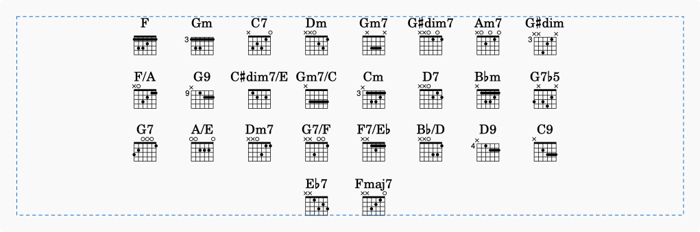
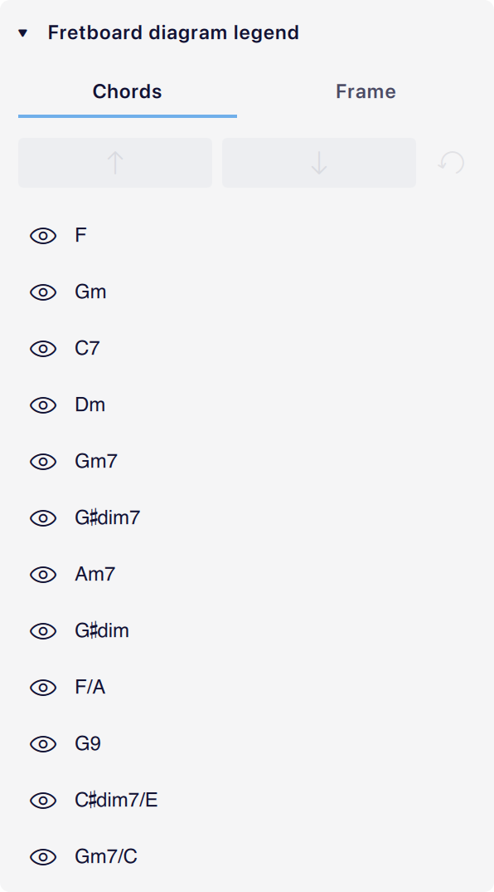
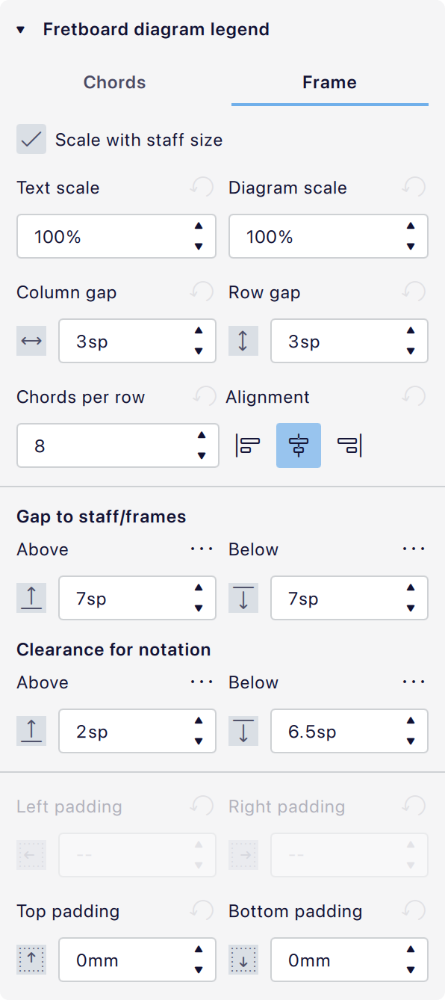

品位图图例
概述
品位图图例 元素用于以表格形式展示给定乐谱中每个唯一的和弦符号以及相应的吉他品位图。
这有助于在一个地方说明如何弹奏乐谱中的所有和弦，而无需用图表使记谱本身变得杂乱。

添加品位图图例
插入品位图图例最常见的位置是乐谱开头。
要添加品位图图例：
- 打开一个包含和弦符号的乐谱。
- 使用以下方法之一添加品位图图例：
* 在 排版 面板中，将品位图图例拖动到你想插入图例的小节（例如第一个小节）。
* 选中你想插入图例的小节中的音符或休止符，然后：
- 单击 排版 面板中的品位图图例元素。
- 导航到 添加 -> 和弦与品位图 -> 品位图图例 或 添加 -> 框架 -> 插入品位图图例。
- 为 插入品位图图例 定义一个键盘快捷键并运行它。
图例将按和弦符号在乐谱中出现的顺序，为每个和弦符号填充一个图表。如果同一个和弦符号在乐谱中多次使用，它在图例中只会出现一次。
乐谱中的和弦符号不需要有品位图也能在图例中显示。
在乐谱末尾添加图例
如果你想在乐谱最后一个小节之后添加品位图图例，你可以：
- 导航到 添加 -> 框架 -> 在乐谱末尾插入 -> 品位图图例。
- 为 在乐谱末尾插入品位图图例 定义一个键盘快捷键并运行它。
编辑品位图图例
编辑图例中的单个元素
和弦符号和品位图在品位图图例中是可单独选中的。
你可以更改图例中和弦符号的外观和某些其他属性，但不能编辑和弦本身。
你可以通过选中每个和弦下方的品位图并编辑其属性来自定义它。见品位图。
为同一个和弦添加不同的图表
要为同名的和弦包含不同的图表，你可以使用特殊的和弦符号语法：
- 添加品位图图例。
- 在乐谱中创建两个和弦符号，并附加
type以及你想要区分它们的任意字符（例如Atype1和Atype2）。 - 可以看到图例中现在有两个不同的
A和弦。 - 选中你想要自定义的和弦的品位图，并在 属性 中进行操作。
品位图图例属性
要选中图例以编辑其属性，请单击图例虚线边界内的任意空白区域。
和弦选项卡
乐谱中每个唯一的和弦符号都会在此选项卡的和弦列表中表示。使用此选项卡可以重新排序、隐藏或重置图例中的和弦。

重新排序图例中的和弦
在和弦选项卡的列表中选择一个和弦，然后使用箭头按钮在列表中向上或向下移动它。
隐藏图例中的和弦
对于想要从图例中隐藏的和弦，关闭可见性（眼睛）按钮 
你也可以在乐谱的图例中选中一个和弦符号或品位图，然后：
- 按 Delete 或 Backspace。
- 右键单击它，并在上下文菜单中选择 隐藏。
重置图例
使用 重置 按钮使所有和弦可见，并将顺序重置为默认值。
框架选项卡

其中许多属性与垂直框架的属性相同。
- 随谱表尺寸缩放： 勾选后，图例的内容将按 页面设置 -> 缩放 中的 谱表间距 设置成比例缩放。
- 文字缩放： 相对于默认值调整图例中所有和弦符号的大小。
- 图表缩放： 相对于默认值调整图例中所有品位图的大小。
- 列间距： 调整每个品位图之间的水平间距。
- 行间距： 调整每行品位图之间的垂直间距。
- 每行和弦数： 设置每行中最大和弦和图表数量。
- 对齐： 选择将图表内容对齐到图例框架的左侧、中央还是右侧。
- 与谱表/框架的间距：
- 上方： 设置图例上方到前一个框架底部或前一个谱表最下面一条谱线之间的间距量。
- 下方： 设置图例下方到后一个框架顶部或后一个谱表最上面一条谱线之间的间距量。
- 在两个相邻的垂直框架或图例之间，会同时考虑第一个框架的下方间距和第二个框架的上方间距，但只应用较大的值。
- 记谱间隙： 如果前/后谱表有延伸到谱表下方/上方的记谱，此设置会设置图例上方/下方到该记谱的间距量。
- 左/右/上/下内边距： 调整图例内容到其所在框架边缘的间距。
- 当 对齐 设置为 左对齐 时，左内边距 可用；当设置为 右对齐 时，右内边距 可用。